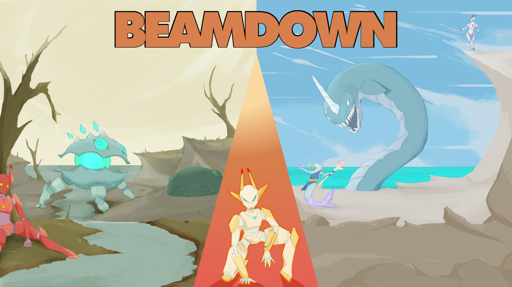
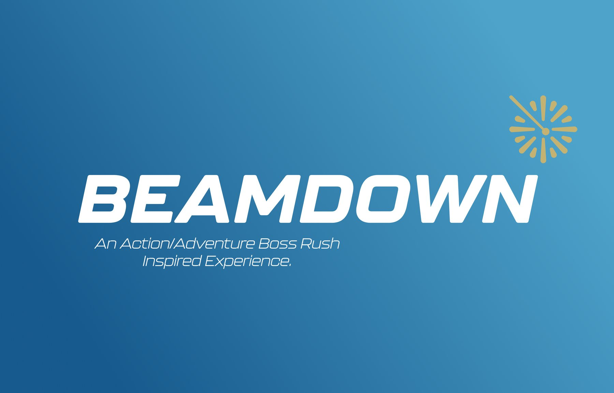
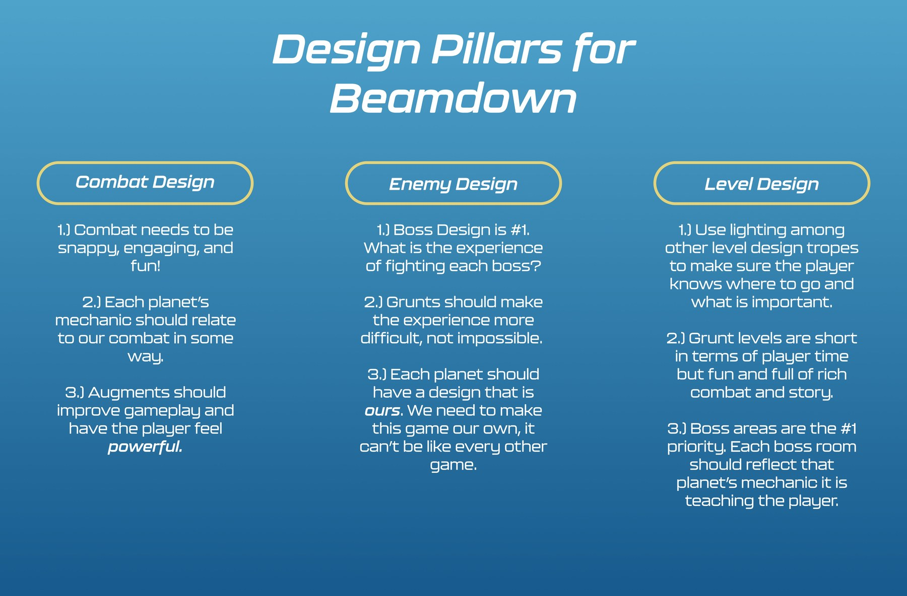
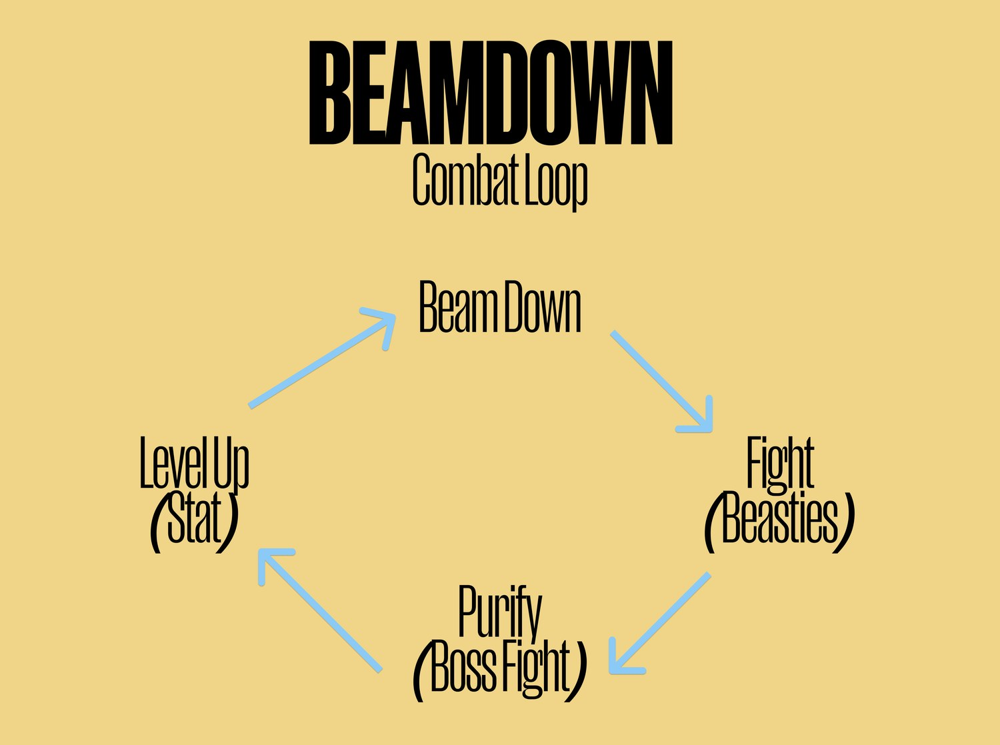
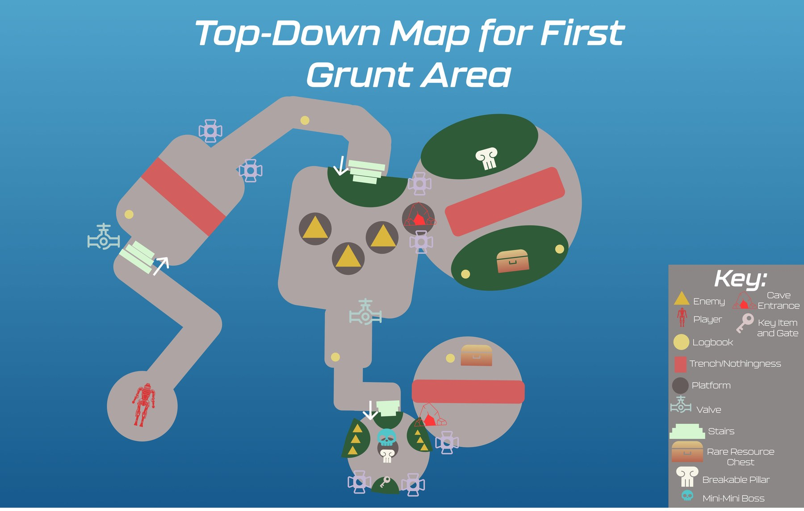
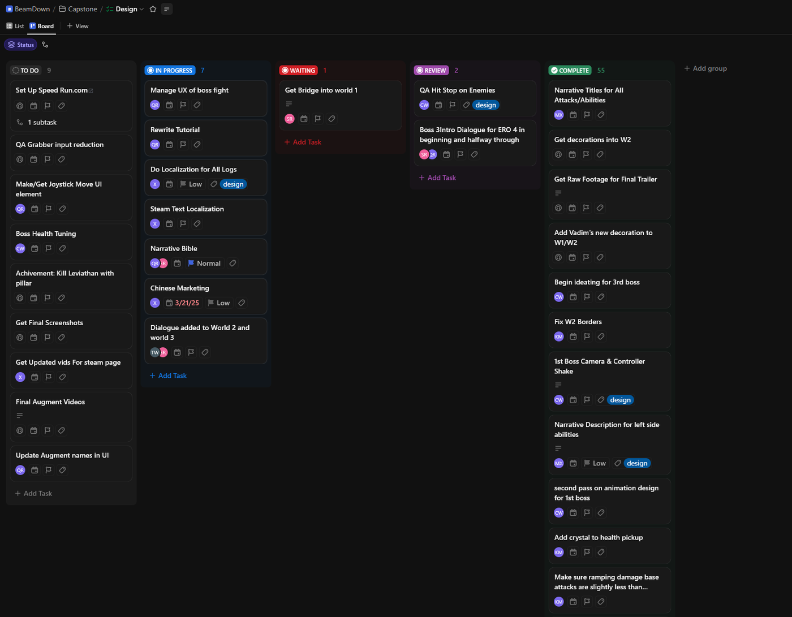

An action/adventure boss rush where you beam down to dying planets, fight through their beasties, and purify each one in a boss fight. A 30-person student capstone I helped lead from a pitch to a public Steam launch.

Beamdown is a 3D top-down hack-and-slash boss rush that keeps a straight face about its own premise. You play E.R.O. 4 — the shiniest new research operative the Societas Philanthropia has ever built — beaming down to strange planets to "research" them.
In practice, research means carving through each world's beasties and decimating its guardian, then customizing your upgrades between fights until you're a dash-happy melee blur or a walking wildfire. The deeper you go, the more you start to wonder what the Societas Philanthropia is really after.
My job was to keep thirty people and one vision moving in the same direction.
I led the design team from pre-production through launch — setting the pillars and the core loop, designing combat and levels around the bosses, and running production so art, engineering, narrative, and QA stayed unblocked all the way to a public Steam release.

A capstone team this size drifts fast without a shared design north star and a production rhythm people actually trust. I had to hold the creative vision steady while unblocking a large, cross-discipline team against a very real ship date.
So I split the job in two: give everyone a small set of pillars to design against, and run a production system tight enough that no one sat waiting on a decision.
Before anyone built anything, I set three pillars so every decision had something to check against: combat had to be snappy, engaging, and make you feel powerful; every enemy had to make a fight harder, not impossible; and every planet had to feel like ours, not like every other game.
These stayed on the wall the whole project — when a call got fuzzy, we took it back to the pillars.

The loop is simple and readable on purpose: beam down, fight the beasties, purify the planet in a boss fight, then level up your stats — and beam down again. Bosses are the star, so grunt encounters exist to teach a planet's mechanic before you're tested on it.
Augments feed that loop — each one should improve how the game plays and make the player feel stronger the next time down.

Grunt areas are short but rich — lighting and layout point the player toward what matters, and every boss room reflects the mechanic that planet has been teaching. Boss areas were always the number-one priority; the run up to them exists to set them up.
This is the top-down map for the first grunt area: platforms, valves, logbooks, a key-and-gate, a mini-boss, and the path that funnels you toward the fight.

I ran production in ClickUp — scoping, sequencing, and tracking deliverables across design, art, engineering, narrative, and QA so nothing stalled waiting on someone else. Boards stayed honest about what was in progress, in review, and done.
Protecting scope is what turned a thirty-person capstone into a finished game on Steam instead of an unfinished demo.

Leading design on a thirty-person team taught me the schedule is a design tool — what ships is decided by what you protect.
Beamdown launched publicly on Steam with an 87% positive rating — a complete action/adventure boss rush built by a thirty-person team I helped lead from a pitch to release.
The biggest lesson was that on a team this size, clarity is the multiplier. A short set of pillars, a loop anyone could read at a glance, and a production rhythm people trusted did more for the final game than any single feature.